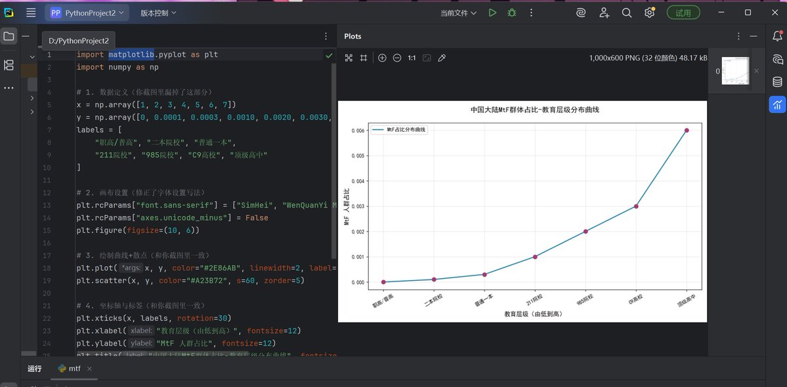
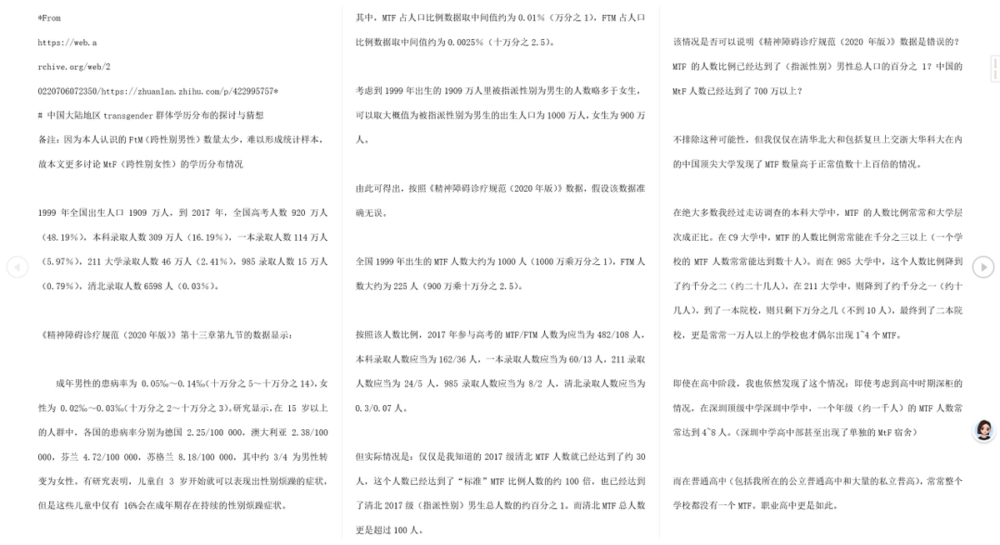
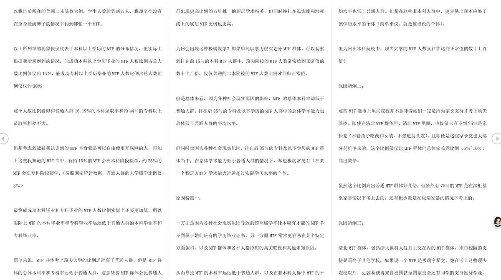
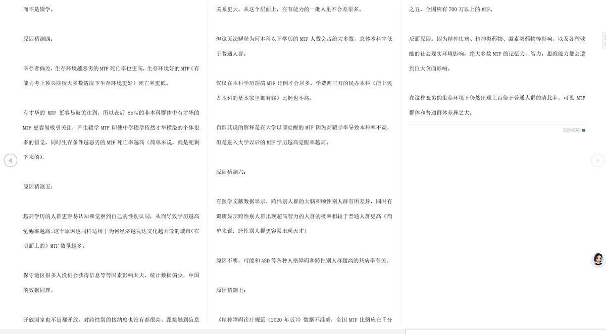

@tomorrowomg 学历越高出现越高，不怎么准确，应该是认知越高，出现概率越高，学历高往往代表高认知，但是就算学历低下的，哪怕他的认知比较高，也会出现mtf,所以说按照学历挂钩并不太准确，应该和认知高低挂钩，高学历是高认知的一种，但不是唯一，所以和个人认知挂钩更准确一点，如果按照学历的话，就会忽略很多





通过在网站上找到的样本数据对国内mtf的群体数量（包括隐性的mtf）以及各个学历的分布情况进行数据分析，我自己用py做了一个图（不想看文章的直接看图），学历越高mtf群体出现的概率越高，以及原作者的一些猜测 https://t.co/5LXwfuzRML